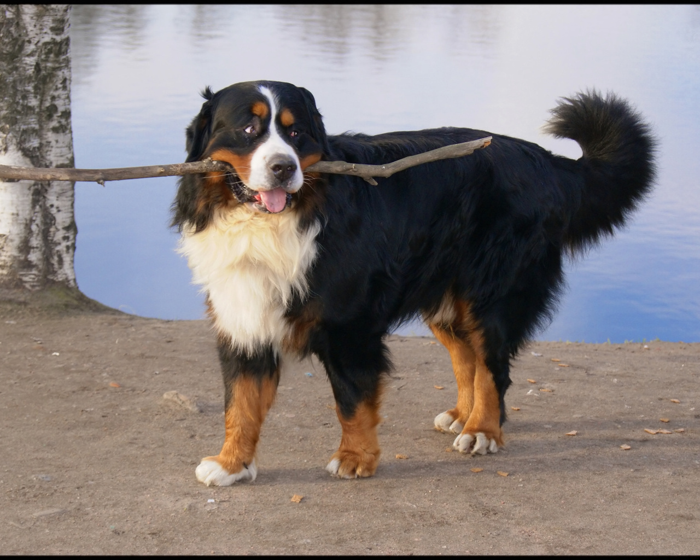

Бернський зенненхунд
Місце походження бернского зенненхунда – Бернська височина, на честь якої ця порода і отримала свою назву. Протягом кількох століть зенненхунд охороняли овечі стада на пасовищах Швейцарських Альп. На виставках ці собаки почали з’являтися тільки на початку 20 століття. Відомо, що в 1949 році до Бернський зенненхунд була домішана кров ньюфаундлендів.Бернський зенненхунд гармонійно поєднує у собі давню красу потужних молосских собак, прекрасний охоронний інстинкт, доброзичливий характер і врівноважену психіку. Все це, в сукупності з великою прихильністю до сім’ї і хорошою обучаемостью, робить його універсальним собакою і відмінним другом. Важливо відзначити, що бернський зенненхунд дуже погано переносить самотність, йому гостро необхідний контакт з людиною.За своєю суттю бернський зенненхунд – собака не злісна, гавкає рідко, проте він з підозрою ставиться до чужинців і, якщо знадобиться, обов’язково стане на захист господаря і своєї сім’ї. Деякі щасливі власники Бернський зенненхунд відзначають, що в характері їх собак присутні деяка самовпевненість, та ще чарівна хитринка.